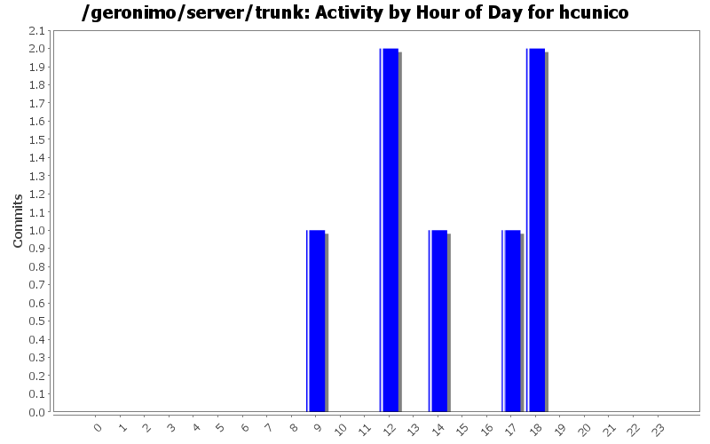
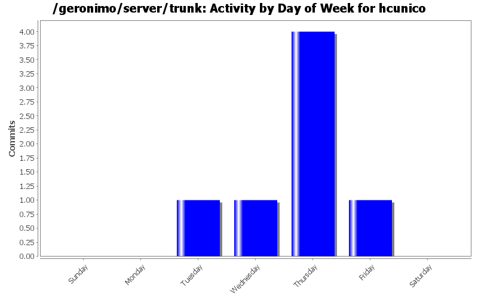
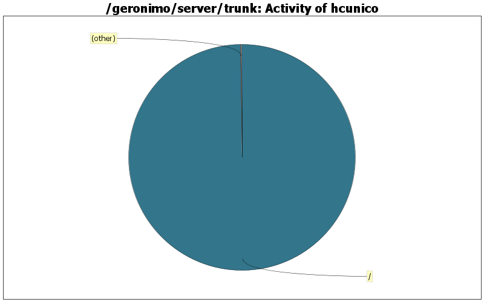

| Directory | Changes | Lines of Code | Lines per Change |
|---|---|---|---|
| Totals | 7 (100.0%) | 479 (100.0%) | 68.4 |
| / | 6 (85.7%) | 478 (99.8%) | 79.6 |
| applications/geronimo-welcome/src/main/webapp/ | 1 (14.3%) | 1 (0.2%) | 1.0 |

updated README.txt with comment about windows limitation on directories path length.
7 lines of code changed in 1 file:
fixed link to FAQ to use the redirect instead.
1 lines of code changed in 1 file:
updated instructions and relevant information on README.txt
76 lines of code changed in 1 file:
updated release notes with the latest changes
386 lines of code changed in 1 file:
updated RELEASE-NOTES-2.0-M1.TXT
1 lines of code changed in 1 file:
updated RELEASE-NOTES-2.0-M1.TXT
1 lines of code changed in 1 file:
GERONIMO-2658 - Added RELEASE-NOTES-2.0-M1.TXT
7 lines of code changed in 1 file: